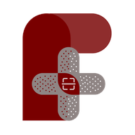

Be the help until help arrives. Fine Aid is an application integrating AI that allows you to capture images of wounds, minor injuries, and skin issues to provide evidence-based first aid guidance, cross-referenced with verified protocols from MIMS Philippines, the World Health Organization, and licensed medical professionals.
STI Altaraza Town Center, San Jose Del Monte, Bulacan · +63-905-817-1544 · admin.fineaid@gmail.com